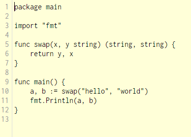

- Syntax & Language Design
Go is essentially C and can be recognized as such, but it has many more changes to it that improve safety and simpicity.
All Go Programs must start with a main package, like this:
package main
and then called as a function:
func main(){ }
Variables are assigned with the following syntax:
x := 5
x := "hello, world"

Like python you don't have to declare a integer or string for the variable
and there is no semicolon or otherwise at the end of a line
Their ultimate goal in creating the language was making it readable and easily understandable
Instead of C's approach to for loops, Go allows you to more concisely iterate through sections of your arrays, maps, and other types of data.